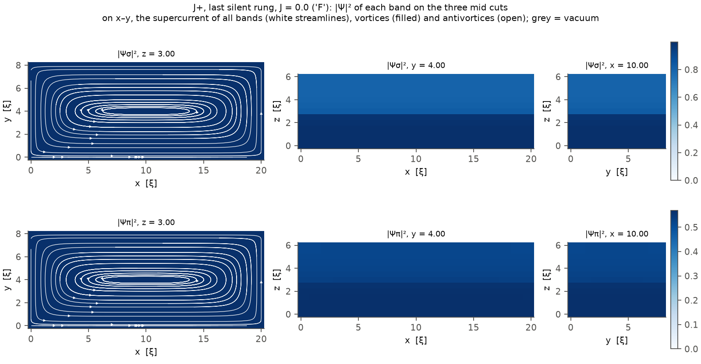

The model
The equations each release integrates, term by term, in the units of the code.
The diode
A transport current J along x and a field H along z push vortices along y (the Lorentz force J × B). A sample whose shape is not mirror-symmetric in y, a notch on one face for instance, presents different barriers to vortex entry for +J and −J: the onsets of dissipation differ, and the efficiency
\[ \eta = \frac{I_c^{+} - |I_c^{-}|}{I_c^{+} + |I_c^{-}|} \]is non-zero. If the sample is symmetric under y → −y the two polarities are the same run mirrored and η = 0 exactly; the solver reproduces that to machine precision, which makes it a control of every asymmetric result.
Two formalisms
Both releases integrate relaxational Ginzburg–Landau dynamics on the same lattice, in the same units, with the same measuring protocol. They differ in what the order parameters are coupled to.
| release 1.2 | release 2.0 | |
|---|---|---|
| order parameters | two (σ and π), Josephson-coupled | N, coupled by a symmetric Josephson matrix; passive bands allowed |
| relaxation | TDGL, one rate per band | generalised TDGL: Kramer–Watts-Tobin per band |
| gauge and potential | Φ = 0, or a scalar potential by Coulomb projection, with Thomas–Fermi screening | Φ = 0; the charge imbalance enters through KWT and the normal fluids |
| normal current | one fluid, σn = 1 | one fluid, or one per band with a finite interband exchange |
| beyond the bands | heat, drag, bath temperature | the same, plus thermal noise, anisotropy, materials per region, vacuum |
Release 1.2: two-band TDGL
The free energy is the two-component Ginzburg–Landau functional with an interband Josephson coupling,
\[ \mathcal F = \sum_{a=\sigma,\pi}\Big[\frac{1}{m_a}\big|(\nabla-i\mathbf A)\Psi_a\big|^2 - f\alpha_a|\Psi_a|^2 + \frac12|\Psi_a|^4\Big] - \gamma_{12}\big(\Psi_\sigma^*\Psi_\pi + \mathrm{c.c.}\big) + \kappa^2|\nabla\times\mathbf A|^2 , \]with mσ = 1 and mπ = mr (the functional of release 2.0 below with two bands and β = 1). Lengths are in the σ coherence length ξσ, fields in Hc2 of σ, time in tGL. In the gauge Φ = 0 the dynamics is relaxational:
\[ \partial_t\Psi_\sigma = (\nabla-i\mathbf A)^2\Psi_\sigma + \big(f\alpha_\sigma - |\Psi_\sigma|^2\big)\Psi_\sigma + \gamma_{12}\Psi_\pi , \] \[ \Gamma_r\,\partial_t\Psi_\pi = \frac{1}{m_r}(\nabla-i\mathbf A)^2\Psi_\pi + \big(f\alpha_\pi - |\Psi_\pi|^2\big)\Psi_\pi + \gamma_{12}\Psi_\sigma , \] \[ \partial_t\mathbf A = \mathbf J_s - \kappa^2\nabla\times\nabla\times\mathbf A, \qquad \mathbf J_s = \mathrm{Im}\big[\Psi_\sigma^*(\nabla-i\mathbf A)\Psi_\sigma\big] + \frac{1}{m_r}\mathrm{Im}\big[\Psi_\pi^*(\nabla-i\mathbf A)\Psi_\pi\big], \]with ασ = 1 − T, απ = a2n − T and f(r) the condensation mask of the geometry. The coherence-length ratio fixes the mass ratio, \( R = \xi_\pi/\xi_\sigma = 1/\sqrt{m_r a_{2n}} \), and the π band's upper critical field is Hc2/R²: a π band with a long coherence length is normal at the fields where vortices enter.
The scalar potential. With use_phi = true each step projects the link increment onto its divergence-free
part, \( D(G\Phi) = D\delta \) with G the lattice gradient and D its adjoint: the Coulomb gauge. Φ alone is a choice of gauge (the
same |Ψ|, field and voltage as Φ = 0). Two extensions change the physics. Thomas–Fermi screening replaces DG by DG − λTF−2.
A relaxing charge-imbalance field Q follows the projection residual, \( \tau_Q\,dQ/dt + Q = D\delta' \), and rotates the
order parameters with μ = Φ + Q.
Release 2.0: N-band generalised TDGL
Lengths are in ξ1, the coherence length of band 1, time in tGL = ξ1²/D1, fields in Hc2 of band 1; band 1 has unit stiffness and relaxation. The functional is
\[ F = \sum_\mu\Big[g_\mu|\mathbf D\Psi_\mu|^2 - f\varepsilon_\mu|\Psi_\mu|^2 + \frac{\beta_\mu}{2}|\Psi_\mu|^4\Big] - \sum_{\mu<\nu}\gamma_{\mu\nu}\big(\Psi_\mu^*\Psi_\nu + \mathrm{c.c.}\big) + \kappa^2|\nabla\times\mathbf A|^2, \]with D = ∇ − iA, εμ = aμ − T and gμ = 1/mμ. The sign of γμν picks the interband phase (s++ for γ > 0, s± for γ < 0); with three or more bands and repulsive couplings the phases frustrate and the ground state can break time reversal. For each band, in the gauge Φ = 0,
\[ \frac{\Gamma_\mu}{\sqrt{1+\tilde\gamma_\mu^2|\Psi_\mu|^2}}\Big[\partial_t\Psi_\mu + \tilde\gamma_\mu^2\,\Psi_\mu\,\mathrm{Re}\big(\Psi_\mu^*\partial_t\Psi_\mu\big)\Big] = g_\mu\mathbf D^2\Psi_\mu + \big(f\varepsilon_\mu - \beta_\mu|\Psi_\mu|^2\big)\Psi_\mu + \sum_{\nu\neq\mu}\gamma_{\mu\nu}\Psi_\nu , \]and for the field
\[ \sigma_n\,\partial_t\mathbf A = \sum_\mu \mathbf J_\mu - \kappa^2\nabla\times\nabla\times\mathbf A, \qquad \mathbf J_\mu = g_\mu\,\mathrm{Im}\big(\Psi_\mu^*\mathbf D\Psi_\mu\big), \qquad \mathbf E = -\partial_t\mathbf A . \]The divergence of the field equation gives ∇·(Js + σnE) = 0 in the continuum and on the lattice, so no Poisson problem is solved. With γ̃μ = 0 the band equation is the TDGL of release 1.2, and the regression tests compare the two releases state by state.
Relaxation and charge imbalance
The Kramer–Watts-Tobin factor slows the amplitude of a band by \( \sqrt{1+\tilde\gamma^2|\Psi|^2} \) relative to its phase: the form of Kramer and Watts-Tobin for one band, applied band by band. In the gauge Φ = 0 the electrochemical potential of the condensate is the rate at which its phase turns. The current enters as normal current, and in the layers next to the contacts it converts into supercurrent; there the phase of a stationary state turns, and KWT lengthens these conversion layers. That is the charge imbalance of Gurevich and Vinokur, slaved to the condensate. Its length is
\[ \lambda_c^2 = \frac{\sigma_n}{\sum_\mu \tilde\Gamma_\mu|\Psi_\mu|^2}, \qquad \tilde\Gamma_\mu = \frac{\Gamma_\mu}{\sqrt{1+\tilde\gamma_\mu^2|\Psi_\mu|^2}} , \]from 0.80 ξ1 to 2.39 ξ1 with γ̃ = 10 in the two-band notched-box model at κ = 2. A sample shorter than about ten λc still carries unconverted normal current in its middle, which moves an onset by itself; every run reports L/λc.
Normal fluids per band
With one normal current σnE the quasiparticles of every band share one potential: their interband exchange is infinitely
fast. With a finite rate ν (qp_exchange) each band has its own normal current
\( s_\mu\sigma_n(-\nabla\mu_\mu - \partial_t\mathbf A) \), sμ its share of σn, and the bands exchange with a
conductance G = χσν. In the gauge Σ sμμμ = 0 Ampère's law is unchanged and one field is new,
δ = μπ − μσ:
with Cμ the conversion of band μ, δ = 0 at the contacts and zero flux elsewhere. Each band then turns by e−iμμdt. With N bands the rates form a matrix with detailed balance and the problem splits into N Helmholtz problems of the same kind. In a long strip the σ share of the converted current follows the one-dimensional two-fluid law.
Thermal noise
A Langevin term on every band, \( \langle\eta_\mu\eta_\mu^*\rangle = 2\Gamma_\mu\tilde T\,\delta(\mathbf r-\mathbf r')\delta(t-t') \), so that the discrete system is distributed as e−F/T̃; T̃ = kBT/(μ0Hc²ξ³) in the units of the functional. With KWT the mobility depends on Ψ,
\[ M = \frac{s}{\Gamma}\,I - \frac{\tilde\gamma^2}{\Gamma s}\,\psi\psi^{\mathsf T}, \qquad s = \sqrt{1+\tilde\gamma^2|\Psi|^2}, \]with the Itô drift that keeps the same equilibrium. The same bath can act on the field (noise_field): each link takes a
kick of variance T̃dt/(σldV) before the implicit solve. The stream is seeded, saved in the checkpoints, and a resumed run
gives the same bits. How the noise enters the stiff KWT phase modes is a question of the integrator, not of the model:
The numerics.
Heat, drag, anisotropy
- Heat. A temperature field above the bath, εμ = aμ − θ(r, t), with \( \partial_t\theta = D_T\nabla^2\theta + \eta\big[\sum_\mu\frac{\Gamma_\mu}{s_\mu}\big(|\partial_t\Psi_\mu|^2 + \tilde\gamma_\mu^2(\mathrm{Re}\,\Psi_\mu^*\partial_t\Psi_\mu)^2\big) + \sigma_n|\mathbf E|^2\big] - \gamma(\theta - T) \), sμ = √(1 + γ̃μ²|Ψμ|²) (Γμ|∂tΨμ|² without KWT). The source is the dissipation of the functional, the band equation times ∂tΨμ*, so a Meissner state does not heat; a point above the cut closes as 'T'.
- Drag. The mixed-gradient term \( \nu_{\mu\nu}\,\mathrm{Re}\big[(\mathbf D\Psi_\mu)^*\cdot\mathbf D\Psi_\nu\big] \) of the functional; it changes the stiffnesses and the supercurrent carries the cross terms.
- Anisotropic bands. A mass per axis and band in the band update, the supercurrent and the step bound: the σ band of MgB2, with its ab/c anisotropy.
Materials per region
A region of the shape can be another material: its own coherence length, relaxation, condensation, KWT parameter, interband coupling and normal conductivity, or a band absent (a one-band metal next to a two-band superconductor). Per node the band update reads its material's coefficients; per link the stiffness is the harmonic mean of the two nodes, times the transparency tab ∈ (0, 1] of the barrier between the two materials,
\[ \rho_{ab} = t_{ab}\,\frac{m_{\mathrm{ref}}}{(m_a+m_b)/2}\,\tau , \]so that the current crosses an interface as a series resistance. The supercurrent, the free energy and the dissipation take the same weights, so the band equations and Ampère's law come from one functional. On the lattice the discrete continuity holds across an interface to 10−15, and the proximity length into a normal or weaker region matches the lattice solution \( \cosh(dx/\xi_d) = 1 + \lambda dx^2/2g \) to 4 × 10−5. κ and the bath temperature are the sample's; band μ of one material meets band μ of the other.

examples/bicapa_tunel.toml at J = 0: |Ψ|² of each band on the three mid cuts. The upper slab
is a weaker material with a quarter of the diffusivity, joined through a barrier of transparency 0.2; the interface is the step in
the x–z and y–z cuts.Shapes and vacuum
The geometry enters as a condensation mask f(r) on the nodes: f = 1 in the bulk, 0 < f < 1 weakened, f > 1 strengthened,
f = 0 a normal metal (not a vacuum). A shape element with vacuum = true removes the material: its nodes leave the block,
and the links that touch them carry no supercurrent. A node next to the vacuum reads no neighbour across that link, which is the
zero-flux condition of a free surface. With an insulating buffer around the sample the current crosses only the sample, and a sample
can be carved in vacuum: a nanowire, a film with a hole, slabs stacked with gaps.
The self-field
The transport current enters as normal current through the two contact faces, and its own Ampère field is imposed on the outer faces:
:bar(default) imposes the field of the nominal current spread over the section of the sample, so the sample carries J·W·d.:openadds the free-space field of every other current of the box, from the Green function of the lattice Laplacian by FFT. This is the field of the screening currents that a mirror face suppresses at small κ.:slabis the boundary of release 1.x, kept to reproduce it.
Units, regime, validity
Every run reports the numbers that place the model:
- the ratio of band diffusivities;
- the interband Josephson length over the sample length, ℓJ/L;
- the invariant γ²/(α1α2);
- σn against the dirty BCS value;
- L/λc.
Ginzburg–Landau theory holds near Tc and on scales of ξ. With dx ≤ ξ/2 a vortex core is resolved, and for a box with flat faces a finer mesh only checks the mesh. A sample carved in vacuum with a curved surface is another matter: its surface is a staircase of cells, and the onset converges with the mesh, as dx². A cylinder of radius 2.75 ξ at κ = 2 switches at 0.875, 0.725 and 0.675 J0 at dx = ξ/2, ξ/3 and ξ/4, which extrapolates to 0.61: dx = ξ/2 puts its onset about 40 % high. Check a carved shape at two meshes before quoting an absolute onset. Below ξ the right theory is microscopic (Bogoliubov–de Gennes in the clean limit, Usadel in the dirty one), not a finer Ginzburg–Landau.
The material files carry each parameter with its source and say which numbers are model choices. A literature KWT parameter γ = 2τEΔ0/ħ becomes γ̃ = γ/|Ψeq| in the units of the code.
What the model does not include
- The memory of the band-resolved (Schmid–Schön) charge imbalance: here it is slaved (KWT per band) with a finite interband exchange.
- A scalar potential in release 2.0. Release 1.2 keeps it.
- A split of σn between the bands that changes from one material to another: it needs the scalar potential.
- Noise together with the heat model. The heat source would count the Langevin kicks as dissipation, so a fluctuating heat model consistent with T̃ is another model.
- Drag together with materials, and heat in a sample carved in vacuum. Both are explicit errors.
- An order parameter of d symmetry. All bands are s-wave; the s± state and time-reversal breaking come from the couplings.